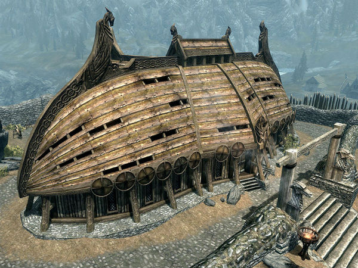
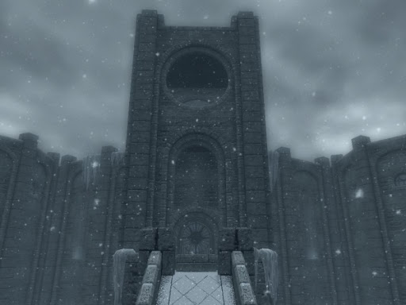
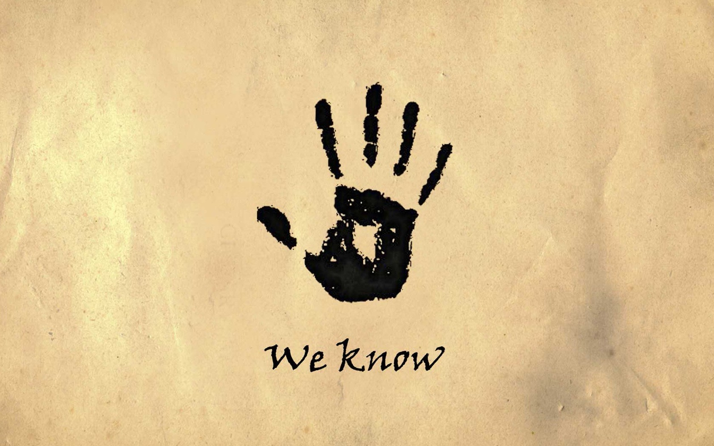
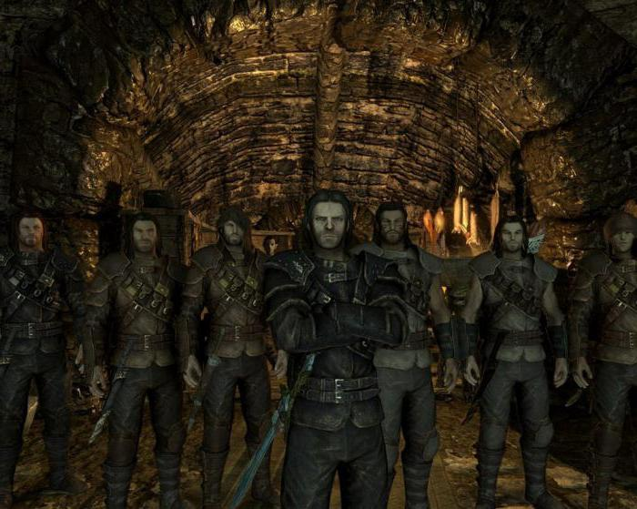
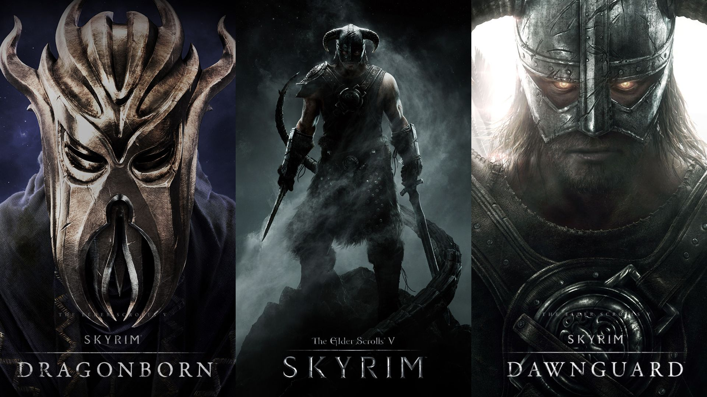

Misiones Principales y Secundarias
{kind=link}
Misiones de la historia principal
Desde que comienza tu aventura, recibirás toda clase de misiones y objetivos que cumplir. Eres tú quien decide como cumplir cada objetivo y misión. Dicho esto, hay tres clases principales de misiones en Skyrim: las de historia, las de gremio y las varias. En este primer apartado vamos a hablar de las misiones de historia
Tu aventura comienza cuando te salvas de ser ejecutado en Helgen gracias al ataque de un dragón. Gracias a esto quedas libre, y puedes empezar a explorar el mundo como te apetezca. La historia principal trata de como debes salvar al mundo del ataque de los dragones. El orden a seguir de las misiones es el siguiente:
Acto uno
- Liberación
- Antes de la tormenta
- Túmulo de las Cataratas Lúgubres
- El ascenso del dragón
- El camino de la voz
- Cuerno de Jurgen Llamador del Viento
Acto dos
- Una hoja en la oscuridad
- Inmunidad diplomática
- Una rata arrinconada
- El muro de Alduin
- La garganta del mundo
- Conocimiento antiguo
- La perdición de Alduin
- Estación sin fin
Acto tres
- El Caído
- Paarthurnax (opcional)
- El nido del devorador del mundo
- Sovngarde
- Matadradones
Con esto habrías completado la historia principal de Skyrim, pero aún queda mucho juego por delante. De hecho, si así lo prefirieras, podrías hacer todo el resto de misiones del juego sin tocar siquiera las misiones de la historia principal.
Misiones Secundarias
Ahora pasemos a las misiones secundarias (o de gremio). Estas misiones de gremio también deben hacerse en un orden predeterminado, tal y como pasaba con las misiones de la historia principal. Actúan como pequeñas historias que se desarrolla dentro de un grupo, o gremio, de personas. Hay cuatro gremios principales que se asemejan a los distintos roles que se pueden adoptar dentro de un rpg. Tienes a los "Compañeros" (gremio de guerreros), "El Colegio de Hibernalia" (gremio de magos), "La Hermandad Oscura" (gremio de asesinos) y el "Gremio de ladrones" (tal y como indica el nombre, es un gremio de ladrones). Estas cuatro facciones o gremios tienen cada una sus propias misiones, y aunque deben realizarse en el orden adecuado, no es necesario haber acabado con alguna misión de un gremio para poder hacer otra de otro gremio diferente.
Los Compañeros
{kind=link}
Los Compañeros son un gremio de guerreros, descendiente de los Quinientos Compañeros, liderado por Ysgramor. Están inspirados en el honor y la hermandad, y son los guerreros más respetados en Carrera Blanca y sus alrededores.
Para ingresar a las filas de los compañeros hay varias formas: Si les ayudaste en la batalla contra el gigante, o al menos estabas presente, los Compañeros se dirigirán a hablar contigo. Si no, ve a Jorrvaskr, en Carrera Blanca, y habla con Kodlak Melena Blanca. Vilkas se opondrá a tu unión, pero Kodlak lo tranquilizará y le ordenará que salga al patio a probar tu valía en el combate.
A partir de este momento podrás realizar las misones de "Los Compañeros". El orden es el siguiente:
- A las armas
- Muestra de honor
- La Mano de Plata
- Honor de sangre
- Venganza pura
- La gloria de los muertos
Tras acabar con algunas de las misiones anteriores, es posible que al hablar con ciertos miembros de "Los Compañeros" te asignen misiones secundarias o repetibles. Estas misiones se pueden hacer en el orden en el que prefieras.
- Criminal huido
- Exterminio de animales
- Golpear en el corazón
- Herencia familiar
- Ídolos de Hircine
- Mano de obra contratada
- Misión de rescate
- Problemas en Skyrim
- Pureza
- Recuperación
- Robar planos
Colegio de Hibernalia
{kind=link}
El Colegio de Hibernalia es el único lugar donde se estudia de una manera estructurada la magia de todo Skyrim. Es por ello un lugar de estudio y conocimiento, a pesar de que los nórdicos desconfían por lo general de la magia.
Para poder unirte al Colegio de Hibernalia el jugador debe usar delante de Faralda el hechizo que te pida (si no lo tienes te ofrece poder comprarlo por 30 septims) o usar un grito delante de ella.
El colegio, al igual que antes, tiene misiones principales y otras secuandarias. Las principales deben ser completadas en el siguiente orden:
- Las primeras lecciones
- En las entrañas de Saarthal
- La letra con sangre entra
- Buenas intenciones
- Revelando lo inadvertido
- Acto de contención
- El bastón de Magnus
- El ojo de Magnus
- Experimento de J'zargo
- La empresa de Arniel
- Réplica
- Revelaciones de Shalidor
- Solicitud de Onmund
- Volver al Colegio
- Hechizo ritual de alteración (es necesario tener la magia de alteración a nivel 100)
- Hechizo ritual de destrucción (es necesario tener la magia de destrucción a nivel 100)
- Hechizo ritual de ilusión (es necesario tener la magia de ilusión a nivel 100)
- Hechizo ritual de restauración (es necesario tener la magia de restauración a nivel 100)
- Hechizo ritual de conjuración (es necesario tener la magia de conjuración a nivel 100)
- El alambique de Tolfdir
- Fragua del atronach
- Reliquia daédrica
- Laberinto de Shalidor
La Hermandad Oscura
{kind=link}
La Hermandad Oscura se trata de un grupo de asesinos que llevan a cabo contratos en nombre de Sithis. Una vez fueron uno de los grupos más temidos de todo Tamriel, pero perdieron su reputación tiempo atrás.
Sus cuarteles generales en Skyrim son en el Santuario de la Hermandad Oscura, localizado cerca de Falkreath, aunque no podrás ir hasta que Astrid te invite a formar parte de la familia. Para ello deberás completar la misión Inocencia perdida en Ventalia.
Sus misiones pricipales son las siguientes:
- Un entierro postergado (opcional)
- Con amigos así...
- Santuario
- El lamento nunca llega
- Susurros en la oscuridad
- El silencio se ha roto
- Hasta que la muerte los separe
- Burlando la seguridad
- El remedio de la locura
- Receta para un desastre
- Cómo matar a un imperio
- La muerte encarnada
- ¡Salve, Sithis!
- Donde pongas la cabeza de tu enemigo...
Sus misiones secundarias son:
- ¡Destruir la Hermandad Oscura! (Si realizas esta misión ya no podrás completar la historia de la Hermandad Oscura)
- Honra a tu familia
- La Hermandad Oscura hasta la muerte
Gremio de Ladrones
{kind=link}
El Gremio de Ladrones tiene su base de operaciones en La Ratonera, bajo la ciudad de Riften. En la ciudad, los miembros son temidos por robar a los habitantes. Los miembros se especializan en el robo de objetos de valor o colectar dinero para el gremio. Son vistos desfavorablemente por la mayoría de personas.
Para poder unirte al gremio, deberás realziar con éxito la misión otorgada por Brynjolf en Riften.
Sus misiones principales son las siguientes:
- Un acuerdo fortuito
- A cargo del negocio
- Alto y claro
- El "bautizo" del aguamiel
- Locura del granuja
- Quien calla, otorga
- Respuestas difíciles
- La persecución
- La vuelta del triunvirato
- Percepción ciega
- El regreso de las tinieblas
- Una nueva dirección
Además de estas misiones, el gremio también ofrece diferentes trabajos que podrás realzar de para hacer que el gremio recupere su antigua gloria. Para ello deberás realizar al menos cinco de los trabajos, ofrecidos por Delvin Mallory o Vex en cada una de las siguientes ciudades: Carrera Blanca, Markarth, Ventalia y Soledad:
Trabajos de Delvin:
- El alboroto
- La pesca
- Los números
Trabajos de Vex
- El robo
- El atraco
- El anzuelo
- La limpieza
Misiones extras
{kind=link}
Aunque hemos mencionado muchas de las misiones más reconocibles de Skyrim, aún quedan muchas más por investigar. La mejor forma de encontrar estas misiones es hablar con cada personaje e investigar cada rincón que ofrece Skyrim. Además con la salida de sus dos principales DLCs "Dragonborn" y "Dawnguard", se han añadido muchísimas misiones más. Si aún no fuera suficiente para tí, echa un vistazo a los cientos de mods disponibles para el juego, lo que puede hacer que efectivamente, el juego resulte en una experiencia diferente para cada jugador.
Si quieres saber más sobre las misiones que ofrece este magnífico juego, puedes echar un vistazo al siguiente enlace